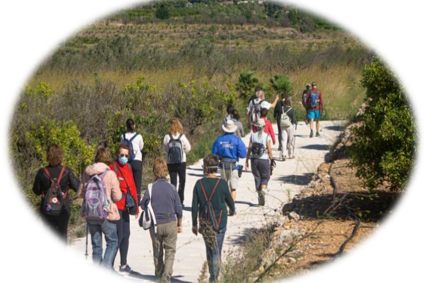

About
Who we are We are an association of young Pego nature lovers, to whom we we love to organize excursions and get lost in the diversity of our landscapes, enjoy the fields and crops in our area in its different phases, from flowering to the season collection. We love to go out with our cameras to generate memories.
Objectives
Guide me by the Marina Alta aims to disseminate the agricultural landscape of our region, located north of the province of Alicante is a tour of the most representative crops in the area, whose trees and plants beautiful scenarios, and that endure as a legacy of the civilizations that have inhabited these lands: Iberian, Roman, Arabic and modern. Our goal is to help our visitors know the rural environment that surrounds this tourist region. Because we believe that the TOURISM is not SUSTAINABILITYwe would like you to learn to value and respect our sites care and preserve their environmental values.